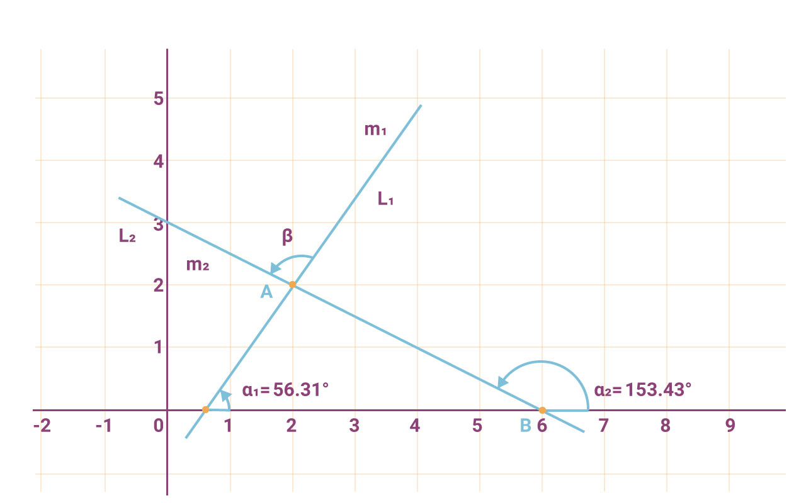
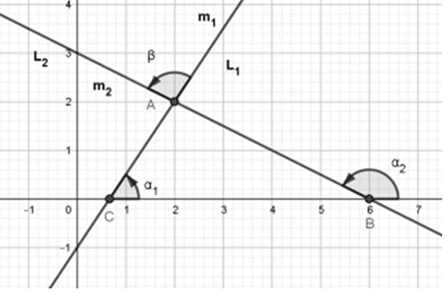
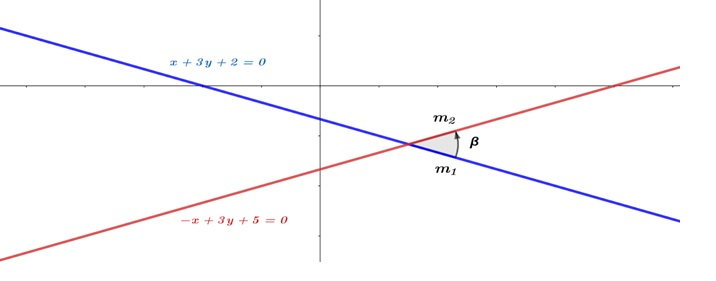

Determinar el ángulo que se forma cuando dos rectas se cortan en términos de sus pendientes.
Actividad 1.
De los siguientes ejemplos encontraremos el valor del ángulo que se forma en la intersección de 2 rectas.
Ejemplo 1.
De la figura 2 se tiene que: $ \alpha_1 = 56.31 \ ; \ \alpha_2 = 153.43$

Figura 2.
Encuentra:
- $m_1$
- $m_2$
- $tan\beta$
- $\beta$ = ángulo entre rectas
Solución.
Las pendientes de ángulo está dada por las rectas $l_1$ y $l_2$. Recordando que $m_1$ es donde inicia la flecha, y está dada por la pendiente de la recta $l_1$
$m_2$ Es la punta la de la flecha, y está dada por la pendiente de la recta $l_2$. Ahora el objetivo es encontrar el ángulo en términos de las pendientes $m_1$ y $m_2$ de las rectas $L_1$ y $L_2$ respectivamente, recordando que \[tan \beta_1 = m_1 \ y \ tan\beta_2 = m_2.\]
Esto implica que:
- Todo ángulo exterior de un triángulo es igual a la suma de los dos ángulos interiores, no adyacente a él.
En la figura 3 se muestra cada uno de los elementos involucrados, por ejemplo el sentido del ángulo, que se forma entre las rectas, partiendo de L1 a L2, en sentido contrario a las manecillas del reloj.

Figura 3.
De la figura se tiene que $\alpha_2= \beta + \alpha_1$ por lo tanto $\beta = \alpha_2 - \alpha_1$ entonces al aplicar la tangente se tiene:
$tan \beta = tan (\alpha_2 - \alpha_1) = \frac{tan\alpha_2 - tan\alpha_1}{1+tan\alpha_1 tan\alpha_2} = \frac{m_2 - m_1}{1+ m_2 m_1} = $ con $m_2 * m_1 \neq 1$
Por lo tanto $tan\beta = \frac{m_2 - m_1}{1+m_1 m_2}$ con $m_2 * m_1 \neq -1$ Esto indica que las rectas no deben ser perpendiculares, porque no está definida.
Ejemplo 2.
Encuentra el ángulo de la recta $x + 3y + 2 = 0$ a la recta $-x + 3y +5 =0$
Solución:
Una manera de resolver este ejemplo es por medio de las fórmulas:
$m = -\frac{A}{B} $
Para la recta:
$m= -\frac{A}{B}$
Por lo que:
$m_1 = - \frac{1}{3}$
Para la recta:
$m= - \frac{A}{B}$
Por lo que:
$m_2 = - \frac{-1}{3} = \frac{1}{3}$

Figura 4.
Ahora utilizando la fórmula:
$tan \beta = \frac{m_2 - m_1}{1+m_1 m_2} \Longrightarrow \frac{\frac{1}{3}-\frac{-1}{3}}{1+\frac{1}{3}\frac{-1}{3}} \Longrightarrow \frac{3}{4}$. Despejando $\beta = tan^{-1} \frac{3}{4} \Longrightarrow$ 36.8°
Por lo tanto el resultado del valor del ángulo es de 36.8°